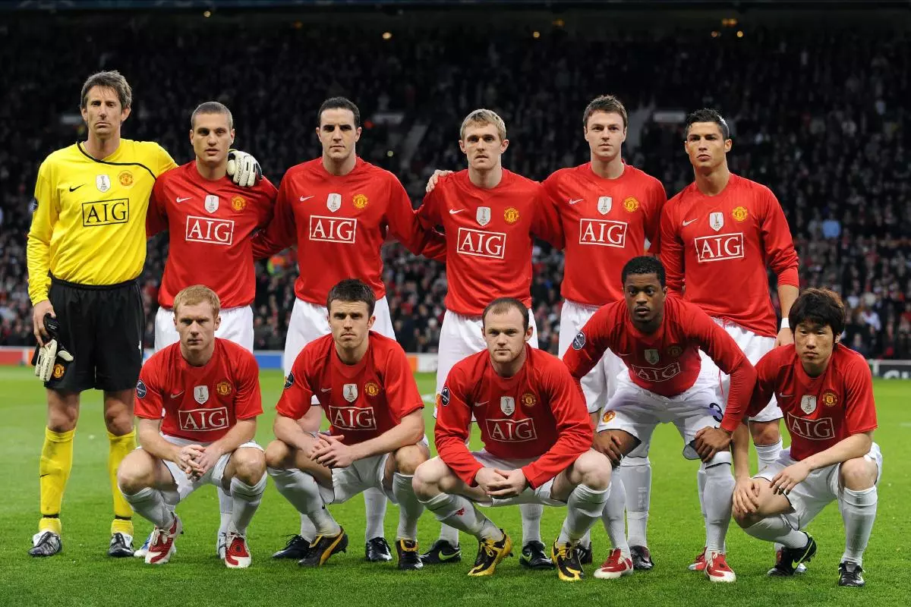

Manchester United stands as one of the most iconic and influential football clubs in the world, with a history that stretches back to 1878 and a legacy built on resilience, ambition, and global impact. Originally founded as Newton Heath, the club rose from modest beginnings to become a dominant force in English and European football. Its journey has not been without hardship—most notably the Munich Air Disaster, which claimed the lives of players and staff and threatened to end the club’s future. Yet, under the guidance of Sir Matt Busby, Manchester United rebuilt itself from tragedy, nurturing young talent and ultimately achieving European glory by winning the European Cup in 1968. This triumph was not just a sporting victory but a symbol of perseverance and unity, cementing the club’s identity as one that rises in the face of adversity. Over time, United became known for its attacking philosophy, commitment to youth, and ability to produce moments of brilliance that captivated fans worldwide. The club reached unparalleled heights during the era of Sir Alex Ferguson, who transformed Manchester United into a footballing dynasty. Between 1986 and 2013, Ferguson led the team to numerous domestic and international titles, including 13 Premier League trophies and the historic treble in 1999. That season, defined by dramatic comebacks and relentless determination, remains one of the greatest achievements in football history. Players such as Ryan Giggs, Paul Scholes, and David Beckham became legends of the game, embodying the club’s philosophy of skill, discipline, and flair. Among these stars, Cristiano Ronaldo emerged as one of the most electrifying talents ever to wear the club’s shirt. Joining as a young prospect in 2003, Ronaldo developed into a global superstar at United, combining pace, power, and technical brilliance to dominate defenders. His performances were instrumental in securing multiple league titles and the 2008 UEFA Champions League, as he won the Ballon d’Or while at the club. Old Trafford, famously known as the “Theatre of Dreams,” served as the stage for countless unforgettable moments, where fans witnessed late goals, title celebrations, and displays of world-class football. This era not only brought success but also expanded Manchester United’s global fanbase, turning the club into a cultural phenomenon recognized far beyond the sport itself. In the years following Ferguson’s retirement, Manchester United has faced the challenge of rebuilding and redefining its identity in a rapidly evolving football landscape. While success has not always come easily, the club continues to invest in new talent and managerial approaches, striving to return to the heights that once defined it. Modern football presents intense competition, financial pressures, and shifting expectations, yet Manchester United remains a symbol of ambition and possibility. Its supporters, spread across the globe, continue to show unwavering loyalty, filling stadiums and following every match with passion and hope. The club’s story is still being written, shaped by both its historic legacy and its future aspirations. Ultimately, Manchester United is more than just a football team—it is an enduring institution that represents perseverance, pride, and the belief that even after setbacks, greatness can be achieved once again.